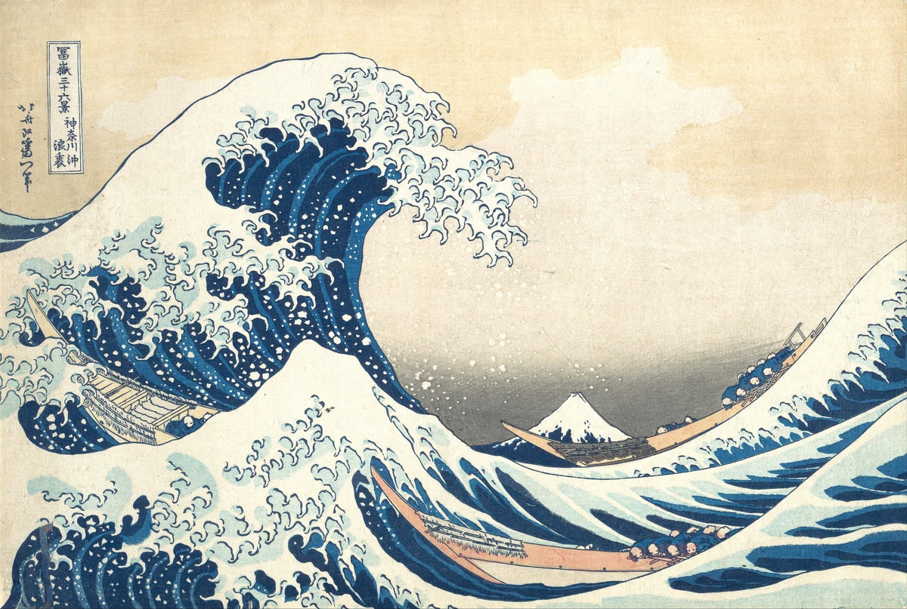
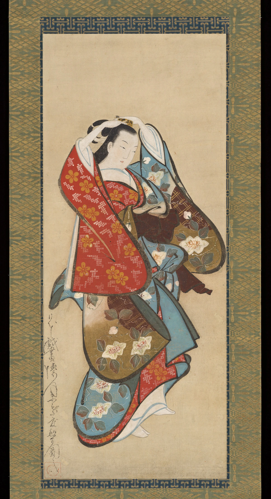
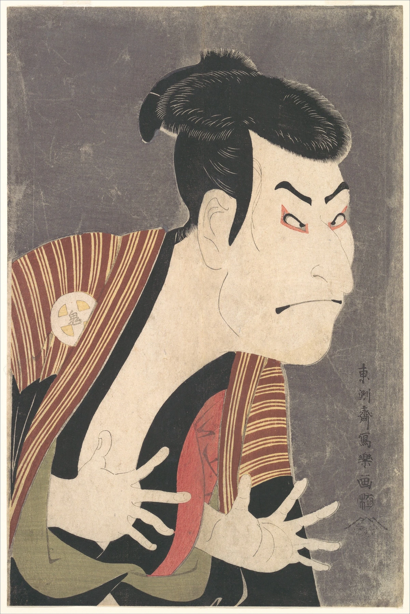

大きな波の中に、小さな富士を置く。
波のくぼみの奥に、白い頂を持つ小さな三角形の富士が見えます。近くの大波と遠くの山の大きさの差が、同じ画面に強い奥行きと緊張を生みます。
本文試作・実作品画像3点収録 / 肉筆画・役者絵・風景版画の比較セット（解説・出典付き） · 2026-11-01
絵画・木版画にまたがる表現の領域（木版技法そのものとは区別）
浮世絵
うきよえには、人気の役者や、人々の服、旅先の風景などが描かれました。
木の板に絵をほり、色をつけて紙に写したものがあります。
筆で紙などに直接かいた絵もあります。
このページでは、人の姿を描いた絵と、波や山を描いた絵を比べられます。
LOOK AT THE WORK / 実作品を見る

画像を表示できませんでした。下の所蔵元リンクから作品を確認できます。
UKIYO-E / LANDSCAPE PRINT · 1830–32年頃
葛飾北斎（絵師） / The Metropolitan Museum of Art
Met所蔵JP1847の摺りを掲載しています。同館のJP2569・JP2972や現代の復刻ではありません。紙に墨・色を用いた木版画、25.7×37.9cm。作品の制作・刊行年代と、この一枚の版の状態を混同しません。
波のくぼみの奥に、白い頂を持つ小さな三角形の富士が見えます。近くの大波と遠くの山の大きさの差が、同じ画面に強い奥行きと緊張を生みます。
波頭の白い飛沫は細かな曲線へ分かれ、三艘の細長い舟が斜めの方向を繰り返します。人々の姿は小さく、波と舟の大きな形の関係から先に画面を読む構成です。
濃い青と淡い青の帯が波の方向を示し、その上には明るい空が広がります。別の摺りを扱う顔料分析を、このJP1847の個別測定結果とはしません。色と紙の状態も所蔵個体ごとに異なります。
形・配色・画面構成は掲載画像の実見による観察です。作者・年代・技法と所蔵個体はMetの個別記録に基づきます。肉筆画・役者絵・風景版画の違いを、制作技法と主題の両方から比較します。
Katsushika Hokusai, Under the Wave off Kanagawa (Kanagawa oki nami ura), from Thirty-six Views of Mount Fuji, ca1830–32. The Metropolitan Museum of Art, H. O. Havemeyer Collection, Bequest of Mrs. H. O. Havemeyer, 1929 (JP1847). Public Domain / CC0.
所蔵元の作品解説 ↗所蔵番号JP1847。原作品：個別Public Domain表示。配信写真：当該媒体のOpen Access指定とMet CC0方針。確認日 2026-11-01。
公式配信の原JPEGは無加工で保持し、拡大リンクから取得できます。ページ表示には縦横比と全画面を保った縮小WebPを使用（切り抜き・色補正なし）。原JPEGと各表示画像のサイズ・SHA-256を権利台帳に別記録。撮影者名は未確認のため推定しません。
美術館のOpen Access方針 / CC0 / 収録画像の権利台帳
US museum assessment, not a claim of universal jurisdictional guarantee
LOOK AT THE WORK / 実作品を見る

画像を表示できませんでした。下の所蔵元リンクから作品を確認できます。
UKIYO-E / BRUSH PAINTING · 18世紀初頭
Kaigetsudō Dohan（懐月堂の絵師） / The Metropolitan Museum of Art
絵の全画面と周囲の表装の一部が写っています。掛軸全体ではありません。紙本墨画着彩の肉筆画で、木版画ではありません。絵の寸法は81.8×33.5cm、表装込みの掛幅は163.5×51.1cm。
袖から裾へ続く太い黒い線が、衣服の重なりと人物の大きな姿を作ります。顔の細い描線との太さの違いに注目すると、同じ筆画でも役割が分かれていることが見えます。
赤地の袖、水色の衣服、茶系の面が重なり、それぞれに花や小さな反復文様があります。身体の細かな立体描写より、文様を伴う面のつながりが視線を下へ導きます。
上げた両手より上には大きな明るい空間が残ります。人物を画面いっぱいに詰める写楽の役者絵とは異なる、立ち姿と空きの関係を比べられます。周囲の表装模様は絵の内部と区別します。
形・配色・画面構成は掲載画像の実見による観察です。作者・年代・技法と所蔵個体はMetの個別記録に基づきます。肉筆画・役者絵・風景版画の違いを、制作技法と主題の両方から比較します。
Kaigetsudō Dohan, Beautiful Woman, early18th century. The Metropolitan Museum of Art, The Harry G. C. Packard Collection of Asian Art, Gift of Harry G. C. Packard, and Purchase, Fletcher, Rogers, Harris Brisbane Dick, and Louis V. Bell Funds, Joseph Pulitzer Bequest, and The Annenberg Fund Inc. Gift, 1975 (1975.268.125). Public Domain / CC0.
所蔵元の作品解説 ↗所蔵番号1975.268.125。原作品：個別Public Domain表示。配信写真：当該媒体のOpen Access指定とMet CC0方針。確認日 2026-11-01。
公式配信の原JPEGは無加工で保持し、拡大リンクから取得できます。ページ表示には縦横比と全画面を保った縮小WebPを使用（切り抜き・色補正なし）。原JPEGと各表示画像のサイズ・SHA-256を権利台帳に別記録。撮影者名は未確認のため推定しません。
美術館のOpen Access方針 / CC0 / 収録画像の権利台帳
US museum assessment, not a claim of universal jurisdictional guarantee
LOOK AT THE WORK / 実作品を見る

画像を表示できませんでした。下の所蔵元リンクから作品を確認できます。
UKIYO-E / ACTOR PRINT · 1794年
東洲斎写楽（絵師） / The Metropolitan Museum of Art
Met所蔵JP2822の一枚です。大谷鬼次は役者、奴江戸兵衛は役名、写楽は絵師です。紙に墨・色・白雲母を用いた木版画。彫師・摺師の個人名や、この個体の摺り順は断定しません。
斜め向きの大きな顔の下で、両手の指が扇状に開いています。表情だけでなく、頭・首・手の角度を組み合わせて人物の動きを読むことができます。
髪は濃い黒の大きな面ですが、その縁には細い毛筋が刻まれています。眉や目の角度、口の短い線と合わせ、輪郭の強弱が役柄の印象を作っています。
灰色の地には舞台の建物や小道具が描かれず、顔と衣服、手が強く浮かびます。館の技法記録は白雲母を含みますが、実物の光沢や当初の発色をこの写真だけで復元したとはしません。
形・配色・画面構成は掲載画像の実見による観察です。作者・年代・技法と所蔵個体はMetの個別記録に基づきます。肉筆画・役者絵・風景版画の違いを、制作技法と主題の両方から比較します。
Tōshūsai Sharaku, Kabuki Actor Ōtani Oniji III as Yakko Edobei, 1794. The Metropolitan Museum of Art, Henry L. Phillips Collection, Bequest of Henry L. Phillips, 1939 (JP2822). Public Domain / CC0.
所蔵元の作品解説 ↗所蔵番号JP2822。原作品：個別Public Domain表示。配信写真：当該媒体のOpen Access指定とMet CC0方針。確認日 2026-11-01。
公式配信の原JPEGは無加工で保持し、拡大リンクから取得できます。ページ表示には縦横比と全画面を保った縮小WebPを使用（切り抜き・色補正なし）。原JPEGと各表示画像のサイズ・SHA-256を権利台帳に別記録。撮影者名は未確認のため推定しません。
美術館のOpen Access方針 / CC0 / 収録画像の権利台帳
US museum assessment, not a claim of universal jurisdictional guarantee
作品の知名度や画像の入手しやすさだけで選びません。紹介したい作品と、調べて分かったことをまとめました。画像を載せられるかどうかは、別に確かめています。画像の利用許諾を確認できていないものは掲載していません。
筆で直接描いた美人画、役者を描いた木版画、風景の木版画という、3点の最初の比較セットです。浮世絵のあらゆる地域、時代、題材をカバーするものではありません。春信が描いた室内の暮らしや、別のものに重ねて見る「見立て」の表現などは、次に加える候補として残しています。
筆で直接かいた、女性の立ち姿です。
服には赤や水色、茶色の大きな模様があります。
顔の細い線と、服を囲む太い線を比べてみましょう。
肉筆画・掛幅・紙本墨画着彩
Metは、大きな筆の動き、存在感のある人物、衣服の鮮やかな模様を結びつけて説明しています。版を彫って刷る浮世絵とは違い、筆で直接描いた人物表現を見る例です。
所蔵番号は1975.268.125です。懐月堂安度（かいげつどうあんど）や、その工房の名で記録された別作品とは区別します。掛軸全体の大きさと、絵の部分の大きさは違うので、どこまでを掲載するか確認します。
芝居をする役者の顔と上半身を、大きく描いた絵です。
顔の下では、両手の指が広がっています。
目や口に加え、手の形も、役の人がらを伝えています。
役者絵・木版画
Metは、斜めを向いた顔、髪、前に差し出した手が、役柄の冷酷さを表すと説明しています。登場人物の個性と、それを演じる俳優の個性を、どちらも示しています。劇場の文化と、人の描き方を考える例です。
役者の名前は、絵の作者の名前ではありません。同じ大谷鬼次を描いた、勝川春英（かつかわしゅんえい）らの別作品とは区別します。所蔵番号JP2822を掲載候補として確認していきます。後からつくった復刻版と、もとの版で刷ったものは混同しません。
大きな波の奥に、小さな富士山が見えます。
波の間には、細長い舟も描かれています。
同じ一枚の中で、近くと遠くの大きさを大きく変えています。
風景版画・木版画
Metは、大波のくぼみに小さな三角形の富士を置くことで、遠近の見え方を工夫したと説明しています。人物を中心にした役者絵と比べると、風景を大胆に組み立てる方法が見えます。青の色や、重ねて刷る方法からは、絵師だけでなく摺師（すりし。版から紙に絵を刷る職人）の仕事も考えられます。
確認しているのはJP1847（作品ページ45434）です。同館のJP2569やJP2972とは別の刷りなので、大きさや伝わってきた経緯を混ぜません。青についての科学的な解説は、別の所蔵先の刷りも扱っています。そのすべてを、JP1847だけを測定した結果とはしません。
作品の内容を説明する見出し
原題：Evening Snow on the Nurioke, from Eight Parlor Views
中国の有名な風景の組み合わせを、室内の道具に重ねて描いた絵です。
出てくるのは、絹の真綿を乾かすための木の道具です。
昔からの題材を、身近な場所で描く方法を考える例です。
室内風俗・古典主題の見立て・木版画
Metはこの連作を、中国の伝統的な絵の題材「瀟湘八景（しょうしょうはっけい）」をもとにした、もじりの表現と説明しています。古典の風景を、身近な室内の道具に読み替えています。写楽の芝居を描く表現や、北斎の風景と比べる例です。
所蔵番号はJP1273です。館はnuriokeを、絹の真綿を乾かすための、漆を塗った木製の型と説明しています。1765年という錦絵（にしきえ。多くの色を使う木版画）の節目に近い作品ですが、この一作を錦絵の発明そのものとはしません。連作のほかの絵や、後に刷ったものとも区別します。具体的な版の数や刷る手順は、引き続き詳しく調べています。
浮世絵（うきよえ）は、木版画だけでなく、筆で直接描いた絵も含みます。17世紀の都市の暮らしや娯楽、流行を描く表現として見ていきます。寛文（かんぶん）期には、一人ひとりの人物を描く肖像も見られます。もともとあった木版の技術を使うことと、浮世絵という表現が生まれることは分けて考えます。
多くの色で一枚の紙に刷る錦絵（にしきえ）では、1765年と暦（こよみ）との関係が節目になります。作品づくりには、絵を描く絵師、版を彫る彫師（ほりし）、紙に刷る摺師（すりし）、出版を担う版元（はんもと）が関わりました。版元は、何を描くかや品質にも関わっています。題材は役者や遊里（ゆうり、遊興の場）の人々から、風景や歴史へも広がりました。
以下は観察のための問いです。すべての作品に共通する固定ルールや、未取得画像の実見結果ではありません。
すべてが同じ配色ではありません。北斎の青や、写楽の白雲母（しろきら、きらめく鉱物の粉）を使った背景など、作品ごとに材料と刷り方を確かめます。筆で直接描く肉筆画（にくひつが）は、版画と同じ工程ではありません。
作品名、作者の署名、出版の情報が書かれていたら、それぞれ何を伝える文字かを確かめます。現代の書体名でまとめず、文字と絵の関係を見ます。
肉筆画では、大きな筆の動きや服の模様を見ます。写楽では、顔や手が役柄をどう伝えるでしょう。春信では、古典の場面を別の場面に重ねる「見立て」も手掛かりです。形の働きを、作り方や用途と結びつけます。
北斎の大波と小さな富士を見比べると、遠近の差が強く感じられます。自然を測ったとおりに写すだけではない、画面の工夫です。ただし、この一作の大胆な配置を、浮世絵すべての条件にはしません。
COMPARE
Dohanの肉筆画では太い筆の輪郭と服の模様、写楽の役者絵では顔と手の形、北斎の風景版画では大波・舟・小さな富士の配置を比べられます。浮世絵が何をどう表すかという話と、筆で描くか、版を彫って刷るかという技法の話を分けます。琳派にも大胆な配置や模様がありますが、形が似ているだけで同じ流れとはいえません。都市の娯楽や作品の売られ方、制作の背景も確かめます。
項目を横に並べる ↗READ TODAY
現代への具体的な影響は、ここではまだ確認できていません。比較するときは、企画・描画・版づくり・印刷を分担する仕組みや、同じ画像を複数つくる仕組みに注目できます。直接受け継がれたとまでは断定しません。
このページを書くときに使った資料です。作品の説明、画像を入手できたかどうか、画像を使う条件は、それぞれ別に確かめています。検索結果で読んだ情報と、元のページを開いて確かめた情報も、調査の記録で分けています。
この項目の収録実画像：3点（図鑑全体：28点）。参照・関連実作品はこの項目0点（図鑑全体2点）。代表作品画像セットの数には含めません。